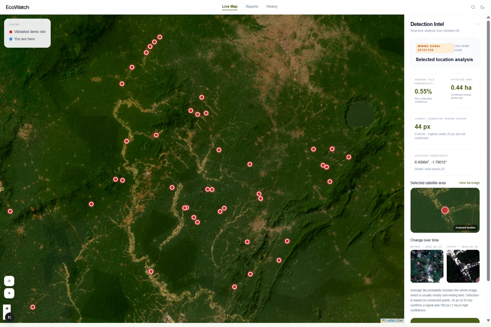

Geospatial machine learning · Aug 2026
EcoWatch
Detecting artisanal and small-scale gold mining in Ghana from multispectral satellite imagery. I independently built the ML pipeline: data preparation, training, evaluation, and inference with a 13-band U-Net.
70.56%Dice score
64.34%IoU
427Test images